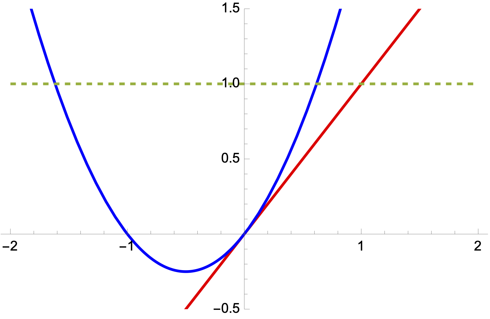

Backward error analysis#
Modern error analysis (in finite dimensional settings) traces its origins to the seminal work of James Hardy Wilkinson. It distinguishes between forward error, which is the error in the result of an algorithm, and backward error, which is a measure of perturbation in the input data.
In the following, we denote by \(f: D \rightarrow Y\) a function that maps data from an input space \(D\) to an output space \(Y\). We assume that \(D \subset X\) and that both \(X\) and \(Y\) are finite-dimensional real vector spaces with the respective norms \(\| \cdot \|_X\) and \(\| \cdot \|_Y\). Correspondingly, we define a function \(\tilde{f}: D \to Y\), which represents an approximate evaluation of \(f\).
Example 1
Let \(f : \mathbb{R}^n \to \mathbb{R}\) be a differentiable function and
its first-order Taylor expansion about \(\bar{x}\).
Example 2
Approximate the derivative \(f := g'\) by a difference quotient of \(g\)
for some \(h > 0\).
Example 3
Consider the solution of the non-singular linear system of equations
with \(A \in \mathbb{R}^{n \times n}\) and \(b \in \mathbb{R}^n\). Then, the input space is the product space \(D = X = \mathbb{R}^{n \times n} \times \mathbb{R}^n\) and our input data is the tuple \((A, b) \in X\). The output space is \(Y = \mathbb{R}^n\). The function \(f\) is given as
and the approximate function \(\tilde{f}\) is, for example, the Gaussian elimination algorithm with rounding errors to compute the solution \(y\).
Forward error#
Let \(y = f(x)\) and \(\tilde{y} = \tilde{f}(x)\). The absolute forward error of \(f\) at \(x\) is defined as
The relative forward error \(E_{rel}\) of \(f\) at \(x\) is defined as
whenever \(y \neq 0\). The forward error is the quantity we are usually most interested in.
Backward error#
The backward error addresses the following question:
Given an input \(x\) and the corresponding output \(\tilde{y} = \tilde{f}(x)\) from the perturbed function \(\tilde{f}\), by how much would one need to perturb \(x\) to an input \(\tilde{x} = x + \Delta x\) so that the original function returns \(\tilde{y}\)? Thus we look for
\[ f(\tilde{x}) = \tilde{y} = \tilde{f}(x). \]
In other words, we ask if the exact function \(f\) could produce the same output as \(\tilde{f}\) but with a slight perturbation in the input data. The idea is that our approximate function \(\tilde{f}\) is useful if only a small perturbation is needed for the input data so that \(f\) produces the same output as \(\tilde{f}\). Note that the perturbation generally depends on the input \(x\).
Example 4
Let \(f(x) = x^2 + x\) and \(\tilde{f} = x\), its linearisation at \(0\). Let \(x = 1\) so that \(\tilde{y} = 1\). The function \(f\) attains \(1\) at \(\tilde{x}_{1,2} := - \frac{1}{2} \pm \frac{\sqrt{5}}{2}\).
{kind=link}
Therefore, \(\Delta x_1 := \tilde{x}_1 - x = (- \frac{1}{2} + \frac{\sqrt{5}}{2}) - 1\) and \(\Delta x_2 := \tilde{x}_2 - x = (- \frac{1}{2} - \frac{\sqrt{5}}{2}) - 1\) are perturbations of \(x\) to reproduce \(\tilde{f}\)’s output.
Example 5
In the second example, we reverse the roles of \(f\) and \(\tilde{f}\). Let \(f(x) = x\) and \(\tilde{f} = x^2 + x\). Given \(\tilde{y} = 1\), there are two possible inputs: \(- \frac{1}{2} \pm \frac{\sqrt{5}}{2}\). Re-reading the question in the box above clarifies that we assume the choice of input is given: suppose it is the positive input \(x = - \frac{1}{2} + \frac{\sqrt{5}}{2}\). Now, with \(\tilde{x} = 1\), the perturbation is \(\Delta x_1 := \tilde{x} - x = 1 - (- \frac{1}{2} + \frac{\sqrt{5}}{2})\).
The potential lack of bijectivity of \(f\) makes the backward error concept more complex than that of the forward error: there may be many possible \(\Delta x\) satisfying \(\tilde{y} = f(x + \Delta x)\). We wish to find a smallest perturbation \(\Delta x\), meaning it is obtained by solving a minimisation problem.
Therefore, the absolute backward error of \(f\) at \(\tilde{y}\) with input \(x \in \tilde{f}^{-1}(\tilde{y})\) is defined as
To express the above, we can also sometimes write more compactly
Similarly, the relative backward error of \(f\) at \(\tilde{y}\) with input \(x \in \tilde{f}^{-1}(\tilde{y})\) is defined as
Recall that \(\inf \emptyset = \infty\); thus, if no \(\Delta x\) exists such that \(f(x+ \Delta x) = \tilde{y}\), then
The definitions simplify if we assume that both \(f\) and \(\tilde{f}\) are invertible. Then there exists only one \(x \in \tilde{f}^{-1}(\tilde{y})\) and we may drop the \(x\) argument in \(\eta_{abs}\) and \(\eta_{rel}\). Furthermore, there is one \(\tilde{x}\) such that \(f(x+ \Delta x) = \tilde{y}\). The minimum of \(\eta_{abs}\) is attained when \(\|\Delta x\| = \epsilon\), that is
Analogously, the minimum of \(\eta_{rel}\) is attained when \(\|\Delta x\| = \epsilon \|x\|\), that is
Thus, for invertible \(f\) and \(\tilde{f}\), the absolute (resp. relative) backward error of \(f\) at \(\tilde{y}\) is equal to the absolute (resp. relative) forward error of \(\tilde{f}^{-1}\) at \(\tilde{y}\), now viewing \(f\) as an approximation of \(\tilde{f}\).
Example 6
Let \(f(A, b) = A^{-1} b\) as introduced in this section. Then, given a vector \(\tilde{y}\), \(f^{-1}(\tilde{y})\) is the set of matrix-vector pairs \((A,b)\) such that \(A \tilde{y} = b\). Clearly, there are many linear systems that have the solution \(\tilde{y}\) and therefore this \(f\) is not invertible.
The definition of the backward error may seem convoluted at first, but it is very useful when combined with the condition number.
Condition Number#
We assume momentarily that \(f\) is differentiable. For \(X = \mathbb{R}^n\) and \(Y = \mathbb{R}^m\) the gradient is an \(\mathbb{R}^{m \times n}\) matrix, whose magnitude we can measure with the induced \(\| \cdot \|_{Y,X}\) norm. Owing to the mean-value theorem, we have for an \(\alpha \in [0,1]\):
Equality (2) is possible by choosing \(\tilde{x} = x + \Delta x\) such that \(\tilde{f}(x) = f(\tilde{x})\). Hence, \(\Delta x\) is the backward perturbation associated with the output \(\tilde{y}\). The right-hand side in (5) is the product of the derivative of \(f\) and the size of the backward error.
Inequality (5) demonstrates that the absolute forward error depends on a product of two quantities: the sensitivity of \(f\) to perturbations (there \(\|\nabla f (x)\|_{Y,X}\)) and the size of the absolute backward error \(\|x-\tilde{x}\|\). This is of fundamental importance and we shall now turn to methods to measure the sensitivity of \(f\) via its condition numbers. The output forward error will still be large if the problem is highly sensitive to perturbations, even though the backward error may be small.
The absolute condition number of \(f : D \to Y\) is defined as
with \(\Delta f = f(x + \Delta x) - f(x)\) being the perturbation in the output data. It measures the largest rate of change observed anywhere in the domain \(D\). To measure the largest rate of change in the vicinity of a point \(x \in D\), one uses the local absolute condition number
Similarly, the relative condition number is defined as
while the local relative condition number is, for \(x \in D\) with \(f(x) \neq 0\),
Hence, \(\kappa_{rel}\) measures the largest possible ratio of relative output error with respect to relative input error under small perturbations. Simplifying the quotients places \(x\) in the numerator so that the case \(x = 0\) is not interpreted as a division by zero. If \(f\) is differentiable, you can show (self-check question)
We use here gradient and Jacobian as interchangable concepts. Returning to equation \((2)\) above, we find
for \(\Delta x \neq 0\). Similarly, convince yourself with the below self-check question that
and, for \(x \neq 0\) and \(f(x) \neq 0\),
In words, the relative forward error is bounded by the product of the condition number and the relative backward error.
What is a good condition number in practice? Ideally, we want the condition number to be as small as possible so that errors in the input data are not amplified in the output error. For each magnitude of the condition number, we lose one digit of accuracy in the output error. This can be seen as follows: Assume we work in double precision and that the algorithm has a backward error that is a small multiple of \(\epsilon_{mach}\). Hence, if the condition number is \(100\), we expect to lose two digits of accuracy in the forward error. If the condition number is in the order of \(\epsilon_{mach}^{-1}\), then we will likely lose almost all digits.
If a condition number is small, we say that the problem is well-conditioned. If the condition number is large, we say that the problem is ill-conditioned. The precise meaning of these terms depends on the requirements of the application.
Worst-case Bound
The condition number is a worst-case bound. In practice, the actual forward error may be better than predicted by the condition number.
In the following, we will generally not use the subscript \(rel\) for relative quantities. Unless otherwise stated, we always work with relative quantities.
Python skills#
When working with numerical computations, derivatives are frequently required. The above formulas for the condition numbers are an example. There are several approaches to approximate or compute them, we begin here by demonstrating a numerical approximation with finite differences, followed by alternative approachs using symbolic and automatic differentiation methods.
Finite Differences#
An efficient way to approximate the derivative of a function \(f : \mathbb{R} \to \mathbb{R}\) at a point \(x\) is to use a finite difference scheme. The derivative \(f'(x)\) can be approximated for example using a central difference formula:
Choosing a suitable step size \(h\) is key: too large and we lose accuracy; too small and we risk numerical round-off errors.
import numpy as np
def f(x):
return np.sin(x**2)
def finite_difference_derivative(f, x, h=1e-5):
return (f(x + h) - f(x - h)) / (2*h)
# Approximate f'(1)
approx_derivative = finite_difference_derivative(f, 1.0)
print("Finite difference approximation of f'(1):", approx_derivative)
Symbolic computation#
Python also has libraries, such as sympy, that can compute the derivitive symbolically, similar to manual calculations or computer algebra programmes such as Mathematica.
import sympy as sp
# Define a symbolic variable
x = sp.Symbol('x', real=True)
# Define the function f(x) = sin(x^2)
f = sp.sin(x**2)
# Compute the derivative f'(x)
f_prime = sp.diff(f, x)
# Print the result
print("f'(x) =", f_prime)
# Optionally, evaluate the derivative at a specific point, e.g., x = 1
print("f'(1) =", f_prime.subs(x, 1))
Automatic Differentiation#
Another way to compute derivatives in Python is through libraries that implement automatic differentiation at runtime, rather than relying on symbolic manipulation. One such tool is autograd, which can take ordinary Python functions using numpy and return functions representing their derivatives, combining symbolic and numerical techniques. This approach is particularly convenient for more complex functions or situations where symbolic differentiation is cumbersome.
import autograd.numpy as np
from autograd import grad
# Define the function f(x) = sin(x²)
def f(x):
return np.sin(x**2)
# Use autograd's grad to create a function for f'(x)
f_prime = grad(f)
# Evaluate the derivative at a specific point, for example, x = 1.0
print("f'(1) =", f_prime(1.0))
The example shows how quickly one can obtain numeric derivatives without explicitly working out the derivative formula. The grad function tracks operations performed on x and automatically applies the chain rule, enabling fast and accurate derivative calculations.
Self-check questions#
Question
Let us consider the function \(f : D \subset \mathbb{R} \to Y, x \mapsto \sqrt{x}\) with \(Y = \mathbb{R}\). Let \(\| \cdot \|_X = \| \cdot \|_Y = | \cdot |\), i.e. the norms are equal to the modulus.
Show that \(K_{abs} = 1/2\) if \(D = [1,2]\).
Show that \(K_{abs} = \infty\) if \(D = [0,1]\).
Show that \(\kappa_{rel} = 1/2\) if \(D = (0,\infty)\).
Answer
Part 1. The absolute condition number is given by:
Here \(f(x) = \sqrt{x}\) and \(D = [1, 2]\). Using the mean value theorem, there exists \(c \in (x, x+\Delta x)\) such that:
where \(f'(x) = \frac{1}{2\sqrt{x}}\). Substituting:
To find the supremum of \(\frac{1}{2\sqrt{c}}\) for \(c \in [1, 2]\), observe that \(\frac{1}{2\sqrt{c}}\) decreases as \(c\) increases. The maximum occurs at \(c = 1\):
Part 2. For \(D = [0, 1]\), consider:
where \(c \in (x, x+\Delta x)\) and \(c \in [0, 1]\). As \(c \to 0^+\), \(\sqrt{c} \to 0\), and \(\frac{1}{2\sqrt{c}} \to \infty\). Thus, \(K_{abs} = \infty\).
Part 3. The relative local condition number is:
Simplify:
From earlier, \(\frac{|f(x+\Delta x) - f(x)|}{|\Delta x|} = \frac{1}{2\sqrt{c}}\), and \(f(x) = \sqrt{x}\), so \(\frac{|x|}{|f(x)|} = \sqrt{x}\). Substituting:
As \(\delta \to 0\), \(c \to x\), so:
Question
Assuming single precision floating-point arithmetic, consider an algorithm with a backward error of \(2 \cdot \epsilon_{mach}\) for a problem with a condition number \(\kappa = 10^{3}\). How many correct digits do you expect in your solution?
Answer
For single precision, we have \(\epsilon_{mach} \approx 6 \times 10^{-8}\). The condition number is \(10^3\). Hence, the forward error is bounded by \(1.2 \times 10^{-4}\), giving us nearly 4 digits of accuracy in the solution.
Question
Let \(x \in \mathbb{R}^2\) and \(f(x) = x_1 - x_2\). Compute the \(\infty\)-norm condition number \(\kappa_{rel}(x)\) of \(f(x)\). For what inputs is the condition number large?
Hint: Use the expression for the condition number of a differentiable function.
Answer
The Jacobian of \(f\) is \(J = \Delta f = \begin{pmatrix}1 & -1\end{pmatrix}\). Hence, \(\|J\|_{\infty} = 2\). For the condition number, we obtain
The condition number is large if \(x_1 \approx x_2\). This reflects the issue of cancellation errors. Consider two numbers \(x_1\) and \(x_2\) that agree to the first 5 digits and each of them is accurate to 7 digits. The difference between the two numbers will only be accurate to 2 digits since the first 5 correct digits cancel each other out.
Question
Let \(f : D \subset X \to Y\) be differentiable, where \(X\) and \(Y\) are finite-dimensional real vector spaces. Show that
Hint: You may find it easier to first try the case \(X = Y = \mathbb{R}\) with \(\| \cdot \|_X = \| \cdot \|_Y = \| \cdot \|_{Y,X} = | \cdot |\).
Answer
Because \(X\) and \(Y\) are finite-dimensional real vector spaces, we may identify them as \(X = \mathbb{R}^n\) and \(Y = \mathbb{R}^m\). Noting that \(f\) is differentiable at \(x\), there is a function \(h: \mathbb{R}^n \to \mathbb{R}^{m \times n}\) with \(\lim_{\| \Delta x \| \to 0} h(x + \Delta x) = 0\) such that
Hence, using the triangle inequality,
and
Furthermore, with \(\xi\) taking the place of \(\lambda \Delta x\) in the last step,
We deduce
Similarly,
Question
Let \(f : D \subset X \to Y\) be differentiable and \(\| x \|_X \neq 0\) and \(\| f(x) \|_Y \neq 0\), \(X\) and \(Y\) being finite-dimensional real vector spaces. Show that
and
Answer
We only show the second bound; the first follows from an inquality similar to \((*)\) below, with an adjusted set over which the supremum is taken. We multiple and divide by an auxiary term: for \(\|\Delta x\|_X > 0\),
Because \(\| f(x) \| \neq 0\) and \(f\) is differentiable, we may use the arguments of the previous self-check question to show that the function
has the continuous extension
at \(\Delta x = 0\), meaning that there is a function \(\tilde{h}: \mathbb{R}^n \to \mathbb{R}\) with \(\lim_{\| \Delta x \| \to 0} \tilde{h}(\Delta x) = 0\) such that
Now the result follows with